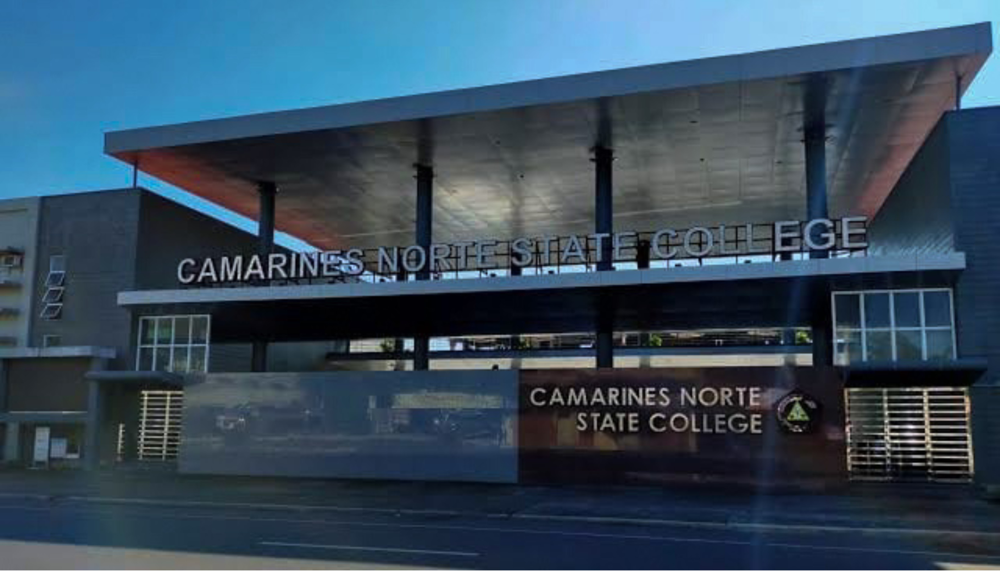

Vinzons Pilot Elementary School
Elementary


I am Alaica Kyte I. Arriola and I’m 19 years old. I was born on November 13, 2004. I am a second year student and currently taking a Bachelor of Science in Information Technology at Camarines Norte State College.
Elementary
Secondary
Tertiary
My hobbies are watching movies and tv series and doing crochets. Those hobbies allows me to express my creativity and unwind. Through my experiences and interests, I continue to explore my passions and strive to grow both personally.